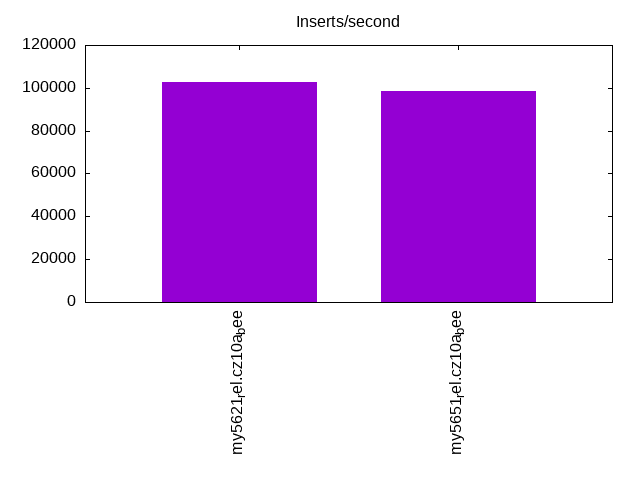
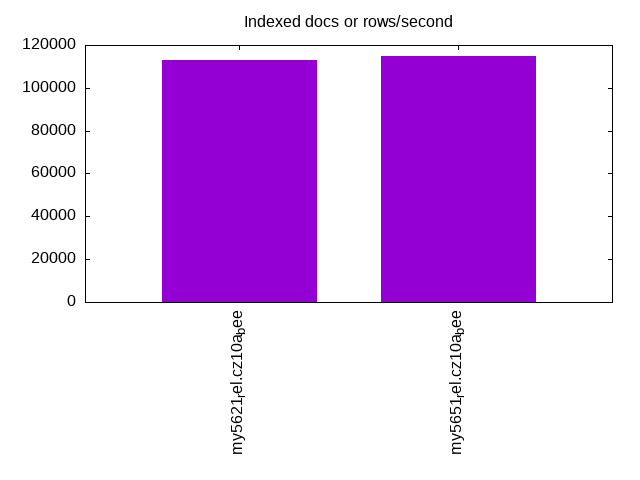
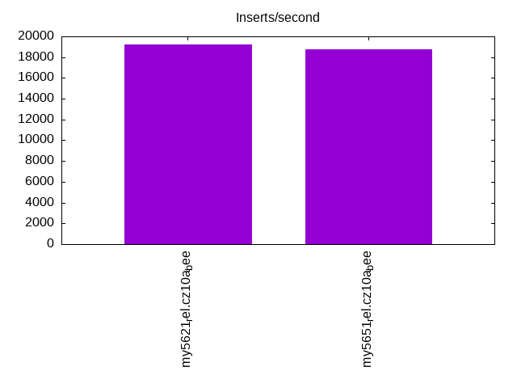
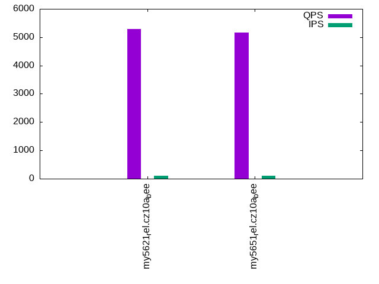
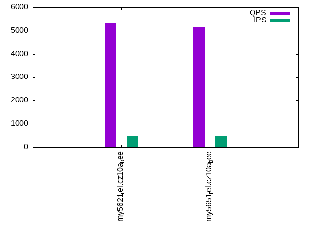
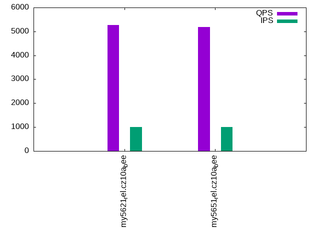

This is a report for the insert benchmark with 20M docs and 1 client(s). It is generated by scripts (bash, awk, sed) and Tufte might not be impressed. An overview of the insert benchmark is here and a short update is here. Below, by DBMS, I mean DBMS+version.config. An example is my8020.c10b40 where my means MySQL, 8020 is version 8.0.20 and c10b40 is the name for the configuration file.
The test server has 8 AMD cores, 16G RAM and an NVMe SSD. It is described here as the Beelink. The benchmark was run with 1 client and there were 1 or 3 connections per client (1 for queries or inserts without rate limits, 1+1 for rate limited inserts+deletes). It uses 1 table. It loads 20M rows per table without secondary indexes, creates secondary indexes, then inserts 50M rows per table with a delete per insert to avoid growing the table. It then does 3 read+write tests for 1800s each that do queries as fast as possible with 100, 500 and then 1000 inserts/second/client concurrent with the queries and 1000 deletes/second to avoid growing the table. The database is cached by InnoDB. Clients and the DBMS share one server. The per-database configs are in the per-database subdirectories here.
The tested DBMS are:
The numbers are inserts/s for l.i0 and l.i1, indexed docs (or rows) /s for l.x and queries/s for q*.2. The values are the average rate over the entire test for inserts (IPS) and queries (QPS). The range of values for IPS and QPS is split into 3 parts: bottom 25%, middle 50%, top 25%. Values in the bottom 25% have a red background, values in the top 25% have a green background and values in the middle have no color. A gray background is used for values that can be ignored because the DBMS did not sustain the target insert rate. Red backgrounds are not used when the minimum value is within 80% of the max value.
| dbms | l.i0 | l.x | l.i1 | q100.1 | q500.1 | q1000.1 |
|---|---|---|---|---|---|---|
| my5621_rel.cz10a_bee | 102564 | 112921 | 19231 | 5292 | 5306 | 5271 |
| my5651_rel.cz10a_bee | 98522 | 114857 | 18720 | 5168 | 5146 | 5186 |
This table has relative throughput, throughput for the DBMS relative to the DBMS in the first line, using the absolute throughput from the previous table. Values less than 0.95 have a yellow background. Values greater than 1.05 have a blue background.
| dbms | l.i0 | l.x | l.i1 | q100.1 | q500.1 | q1000.1 |
|---|---|---|---|---|---|---|
| my5621_rel.cz10a_bee | 1.00 | 1.00 | 1.00 | 1.00 | 1.00 | 1.00 |
| my5651_rel.cz10a_bee | 0.96 | 1.02 | 0.97 | 0.98 | 0.97 | 0.98 |
This lists the average rate of inserts/s for the tests that do inserts concurrent with queries. For such tests the query rate is listed in the table above. The read+write tests are setup so that the insert rate should match the target rate every second. Cells that are not at least 95% of the target have a red background to indicate a failure to satisfy the target.
| dbms | q100.1 | q500.1 | q1000.1 |
|---|---|---|---|
| my5621_rel.cz10a_bee | 100 | 498 | 997 |
| my5651_rel.cz10a_bee | 100 | 498 | 996 |
| target | 100 | 500 | 1000 |
l.i0: load without secondary indexes. Graphs for performance per 1-second interval are here.
Average throughput:
Insert response time histogram: each cell has the percentage of responses that take <= the time in the header and max is the max response time in seconds. For the max column values in the top 25% of the range have a red background and in the bottom 25% of the range have a green background. The red background is not used when the min value is within 80% of the max value.
| dbms | 256us | 1ms | 4ms | 16ms | 64ms | 256ms | 1s | 4s | 16s | gt | max |
|---|---|---|---|---|---|---|---|---|---|---|---|
| my5621_rel.cz10a_bee | 94.466 | 5.423 | 0.107 | 0.001 | 0.003 | 0.097 | |||||
| my5651_rel.cz10a_bee | 89.182 | 10.700 | 0.112 | 0.003 | 0.003 | 0.098 |
Performance metrics for the DBMS listed above. Some are normalized by throughput, others are not. Legend for results is here.
ips qps rps rmbps wps wmbps rpq rkbpq wpi wkbpi csps cpups cspq cpupq dbgb1 dbgb2 rss maxop p50 p99 tag 102564 0 901 3.5 210.6 28.2 0.009 0.035 0.002 0.282 12208 22.0 0.119 17 1.3 17.8 1.9 0.097 103293 86261 20m.my5621_rel.cz10a_bee 98522 0 865 3.4 251.0 28.5 0.009 0.035 0.003 0.296 11638 21.7 0.118 18 1.3 17.8 1.9 0.098 99142 87407 20m.my5651_rel.cz10a_bee
l.x: create secondary indexes.
Average throughput:
Performance metrics for the DBMS listed above. Some are normalized by throughput, others are not. Legend for results is here.
ips qps rps rmbps wps wmbps rpq rkbpq wpi wkbpi csps cpups cspq cpupq dbgb1 dbgb2 rss maxop p50 p99 tag 112921 0 16 0.1 922.3 106.7 0.000 0.001 0.008 0.968 2272 11.6 0.020 8 2.7 19.2 3.0 0.009 NA NA 20m.my5621_rel.cz10a_bee 114857 0 18 0.1 903.1 106.3 0.000 0.001 0.008 0.947 2274 11.4 0.020 8 2.7 19.2 3.2 0.009 NA NA 20m.my5651_rel.cz10a_bee
l.i1: continue load after secondary indexes created. Graphs for performance per 1-second interval are here.
Average throughput:
Insert response time histogram: each cell has the percentage of responses that take <= the time in the header and max is the max response time in seconds. For the max column values in the top 25% of the range have a red background and in the bottom 25% of the range have a green background. The red background is not used when the min value is within 80% of the max value.
| dbms | 256us | 1ms | 4ms | 16ms | 64ms | 256ms | 1s | 4s | 16s | gt | max |
|---|---|---|---|---|---|---|---|---|---|---|---|
| my5621_rel.cz10a_bee | 95.231 | 4.579 | 0.188 | 0.002 | 0.109 | ||||||
| my5651_rel.cz10a_bee | 94.966 | 4.834 | 0.199 | 0.001 | 0.099 |
Delete response time histogram: each cell has the percentage of responses that take <= the time in the header and max is the max response time in seconds. For the max column values in the top 25% of the range have a red background and in the bottom 25% of the range have a green background. The red background is not used when the min value is within 80% of the max value.
| dbms | 256us | 1ms | 4ms | 16ms | 64ms | 256ms | 1s | 4s | 16s | gt | max |
|---|---|---|---|---|---|---|---|---|---|---|---|
| my5621_rel.cz10a_bee | 96.314 | 3.542 | 0.143 | 0.001 | 0.083 | ||||||
| my5651_rel.cz10a_bee | 96.214 | 3.639 | 0.147 | 0.001 | 0.076 |
Performance metrics for the DBMS listed above. Some are normalized by throughput, others are not. Legend for results is here.
ips qps rps rmbps wps wmbps rpq rkbpq wpi wkbpi csps cpups cspq cpupq dbgb1 dbgb2 rss maxop p50 p99 tag 19231 0 645 2.5 1693.5 75.3 0.034 0.134 0.088 4.008 15342 34.2 0.798 142 3.8 20.3 4.5 0.109 20527 4997 20m.my5621_rel.cz10a_bee 18720 0 624 2.4 1662.9 73.8 0.033 0.133 0.089 4.036 14861 33.9 0.794 145 3.8 20.3 4.5 0.099 19977 4795 20m.my5651_rel.cz10a_bee
q100.1: range queries with 100 insert/s per client. Graphs for performance per 1-second interval are here.
Average throughput:
Query response time histogram: each cell has the percentage of responses that take <= the time in the header and max is the max response time in seconds. For max values in the top 25% of the range have a red background and in the bottom 25% of the range have a green background. The red background is not used when the min value is within 80% of the max value.
| dbms | 256us | 1ms | 4ms | 16ms | 64ms | 256ms | 1s | 4s | 16s | gt | max |
|---|---|---|---|---|---|---|---|---|---|---|---|
| my5621_rel.cz10a_bee | 94.681 | 5.313 | 0.003 | 0.003 | nonzero | 0.017 | |||||
| my5651_rel.cz10a_bee | 93.406 | 6.589 | 0.002 | 0.003 | nonzero | 0.018 |
Insert response time histogram: each cell has the percentage of responses that take <= the time in the header and max is the max response time in seconds. For max values in the top 25% of the range have a red background and in the bottom 25% of the range have a green background. The red background is not used when the min value is within 80% of the max value.
| dbms | 256us | 1ms | 4ms | 16ms | 64ms | 256ms | 1s | 4s | 16s | gt | max |
|---|---|---|---|---|---|---|---|---|---|---|---|
| my5621_rel.cz10a_bee | 50.611 | 48.278 | 1.111 | 0.033 | |||||||
| my5651_rel.cz10a_bee | 54.083 | 44.778 | 1.139 | 0.028 |
Delete response time histogram: each cell has the percentage of responses that take <= the time in the header and max is the max response time in seconds. For max values in the top 25% of the range have a red background and in the bottom 25% of the range have a green background. The red background is not used when the min value is within 80% of the max value.
| dbms | 256us | 1ms | 4ms | 16ms | 64ms | 256ms | 1s | 4s | 16s | gt | max |
|---|---|---|---|---|---|---|---|---|---|---|---|
| my5621_rel.cz10a_bee | 52.167 | 47.194 | 0.639 | 0.031 | |||||||
| my5651_rel.cz10a_bee | 55.889 | 43.667 | 0.444 | 0.025 |
Performance metrics for the DBMS listed above. Some are normalized by throughput, others are not. Legend for results is here.
ips qps rps rmbps wps wmbps rpq rkbpq wpi wkbpi csps cpups cspq cpupq dbgb1 dbgb2 rss maxop p50 p99 tag 100 5292 4 0.0 659.3 19.8 0.001 0.003 6.613 203.099 22405 13.2 4.234 200 3.8 20.3 4.5 0.017 5322 4842 20m.my5621_rel.cz10a_bee 100 5168 4 0.0 679.5 20.4 0.001 0.003 6.808 209.216 21877 13.1 4.233 203 3.8 20.3 4.5 0.018 5195 4684 20m.my5651_rel.cz10a_bee
q500.1: range queries with 500 insert/s per client. Graphs for performance per 1-second interval are here.
Average throughput:
Query response time histogram: each cell has the percentage of responses that take <= the time in the header and max is the max response time in seconds. For max values in the top 25% of the range have a red background and in the bottom 25% of the range have a green background. The red background is not used when the min value is within 80% of the max value.
| dbms | 256us | 1ms | 4ms | 16ms | 64ms | 256ms | 1s | 4s | 16s | gt | max |
|---|---|---|---|---|---|---|---|---|---|---|---|
| my5621_rel.cz10a_bee | 94.655 | 5.340 | 0.002 | 0.003 | 0.011 | ||||||
| my5651_rel.cz10a_bee | 92.901 | 7.094 | 0.002 | 0.003 | 0.012 |
Insert response time histogram: each cell has the percentage of responses that take <= the time in the header and max is the max response time in seconds. For max values in the top 25% of the range have a red background and in the bottom 25% of the range have a green background. The red background is not used when the min value is within 80% of the max value.
| dbms | 256us | 1ms | 4ms | 16ms | 64ms | 256ms | 1s | 4s | 16s | gt | max |
|---|---|---|---|---|---|---|---|---|---|---|---|
| my5621_rel.cz10a_bee | 90.000 | 9.922 | 0.078 | 0.023 | |||||||
| my5651_rel.cz10a_bee | 89.994 | 9.906 | 0.100 | 0.018 |
Delete response time histogram: each cell has the percentage of responses that take <= the time in the header and max is the max response time in seconds. For max values in the top 25% of the range have a red background and in the bottom 25% of the range have a green background. The red background is not used when the min value is within 80% of the max value.
| dbms | 256us | 1ms | 4ms | 16ms | 64ms | 256ms | 1s | 4s | 16s | gt | max |
|---|---|---|---|---|---|---|---|---|---|---|---|
| my5621_rel.cz10a_bee | 90.389 | 9.567 | 0.044 | 0.022 | |||||||
| my5651_rel.cz10a_bee | 90.161 | 9.806 | 0.033 | 0.018 |
Performance metrics for the DBMS listed above. Some are normalized by throughput, others are not. Legend for results is here.
ips qps rps rmbps wps wmbps rpq rkbpq wpi wkbpi csps cpups cspq cpupq dbgb1 dbgb2 rss maxop p50 p99 tag 498 5306 17 0.1 158.6 5.2 0.003 0.013 0.318 10.771 21265 13.5 4.008 204 3.8 20.3 4.5 0.011 5337 4842 20m.my5621_rel.cz10a_bee 498 5146 16 0.1 61.3 2.3 0.003 0.013 0.123 4.756 20394 13.5 3.963 210 3.8 20.3 4.5 0.012 5179 4649 20m.my5651_rel.cz10a_bee
q1000.1: range queries with 1000 insert/s per client. Graphs for performance per 1-second interval are here.
Average throughput:
Query response time histogram: each cell has the percentage of responses that take <= the time in the header and max is the max response time in seconds. For max values in the top 25% of the range have a red background and in the bottom 25% of the range have a green background. The red background is not used when the min value is within 80% of the max value.
| dbms | 256us | 1ms | 4ms | 16ms | 64ms | 256ms | 1s | 4s | 16s | gt | max |
|---|---|---|---|---|---|---|---|---|---|---|---|
| my5621_rel.cz10a_bee | 94.222 | 5.771 | 0.005 | 0.003 | 0.015 | ||||||
| my5651_rel.cz10a_bee | 93.153 | 6.840 | 0.004 | 0.003 | nonzero | 0.016 |
Insert response time histogram: each cell has the percentage of responses that take <= the time in the header and max is the max response time in seconds. For max values in the top 25% of the range have a red background and in the bottom 25% of the range have a green background. The red background is not used when the min value is within 80% of the max value.
| dbms | 256us | 1ms | 4ms | 16ms | 64ms | 256ms | 1s | 4s | 16s | gt | max |
|---|---|---|---|---|---|---|---|---|---|---|---|
| my5621_rel.cz10a_bee | 92.283 | 7.642 | 0.075 | 0.040 | |||||||
| my5651_rel.cz10a_bee | 92.847 | 7.064 | 0.089 | 0.040 |
Delete response time histogram: each cell has the percentage of responses that take <= the time in the header and max is the max response time in seconds. For max values in the top 25% of the range have a red background and in the bottom 25% of the range have a green background. The red background is not used when the min value is within 80% of the max value.
| dbms | 256us | 1ms | 4ms | 16ms | 64ms | 256ms | 1s | 4s | 16s | gt | max |
|---|---|---|---|---|---|---|---|---|---|---|---|
| my5621_rel.cz10a_bee | 92.889 | 7.083 | 0.028 | 0.019 | |||||||
| my5651_rel.cz10a_bee | 93.497 | 6.464 | 0.039 | 0.026 |
Performance metrics for the DBMS listed above. Some are normalized by throughput, others are not. Legend for results is here.
ips qps rps rmbps wps wmbps rpq rkbpq wpi wkbpi csps cpups cspq cpupq dbgb1 dbgb2 rss maxop p50 p99 tag 997 5271 33 0.1 429.4 13.9 0.006 0.025 0.431 14.240 22082 14.7 4.189 223 3.8 20.3 4.5 0.015 5290 4794 20m.my5621_rel.cz10a_bee 996 5186 33 0.1 516.2 16.5 0.006 0.025 0.518 16.950 21942 14.7 4.231 227 3.8 20.3 4.5 0.016 5212 4683 20m.my5651_rel.cz10a_bee
l.i0: load without secondary indexes
Performance metrics for all DBMS, not just the ones listed above. Some are normalized by throughput, others are not. Legend for results is here.
ips qps rps rmbps wps wmbps rpq rkbpq wpi wkbpi csps cpups cspq cpupq dbgb1 dbgb2 rss maxop p50 p99 tag 102564 0 901 3.5 210.6 28.2 0.009 0.035 0.002 0.282 12208 22.0 0.119 17 1.3 17.8 1.9 0.097 103293 86261 20m.my5621_rel.cz10a_bee 98522 0 865 3.4 251.0 28.5 0.009 0.035 0.003 0.296 11638 21.7 0.118 18 1.3 17.8 1.9 0.098 99142 87407 20m.my5651_rel.cz10a_bee
l.x: create secondary indexes
Performance metrics for all DBMS, not just the ones listed above. Some are normalized by throughput, others are not. Legend for results is here.
ips qps rps rmbps wps wmbps rpq rkbpq wpi wkbpi csps cpups cspq cpupq dbgb1 dbgb2 rss maxop p50 p99 tag 112921 0 16 0.1 922.3 106.7 0.000 0.001 0.008 0.968 2272 11.6 0.020 8 2.7 19.2 3.0 0.009 NA NA 20m.my5621_rel.cz10a_bee 114857 0 18 0.1 903.1 106.3 0.000 0.001 0.008 0.947 2274 11.4 0.020 8 2.7 19.2 3.2 0.009 NA NA 20m.my5651_rel.cz10a_bee
l.i1: continue load after secondary indexes created
Performance metrics for all DBMS, not just the ones listed above. Some are normalized by throughput, others are not. Legend for results is here.
ips qps rps rmbps wps wmbps rpq rkbpq wpi wkbpi csps cpups cspq cpupq dbgb1 dbgb2 rss maxop p50 p99 tag 19231 0 645 2.5 1693.5 75.3 0.034 0.134 0.088 4.008 15342 34.2 0.798 142 3.8 20.3 4.5 0.109 20527 4997 20m.my5621_rel.cz10a_bee 18720 0 624 2.4 1662.9 73.8 0.033 0.133 0.089 4.036 14861 33.9 0.794 145 3.8 20.3 4.5 0.099 19977 4795 20m.my5651_rel.cz10a_bee
q100.1: range queries with 100 insert/s per client
Performance metrics for all DBMS, not just the ones listed above. Some are normalized by throughput, others are not. Legend for results is here.
ips qps rps rmbps wps wmbps rpq rkbpq wpi wkbpi csps cpups cspq cpupq dbgb1 dbgb2 rss maxop p50 p99 tag 100 5292 4 0.0 659.3 19.8 0.001 0.003 6.613 203.099 22405 13.2 4.234 200 3.8 20.3 4.5 0.017 5322 4842 20m.my5621_rel.cz10a_bee 100 5168 4 0.0 679.5 20.4 0.001 0.003 6.808 209.216 21877 13.1 4.233 203 3.8 20.3 4.5 0.018 5195 4684 20m.my5651_rel.cz10a_bee
q500.1: range queries with 500 insert/s per client
Performance metrics for all DBMS, not just the ones listed above. Some are normalized by throughput, others are not. Legend for results is here.
ips qps rps rmbps wps wmbps rpq rkbpq wpi wkbpi csps cpups cspq cpupq dbgb1 dbgb2 rss maxop p50 p99 tag 498 5306 17 0.1 158.6 5.2 0.003 0.013 0.318 10.771 21265 13.5 4.008 204 3.8 20.3 4.5 0.011 5337 4842 20m.my5621_rel.cz10a_bee 498 5146 16 0.1 61.3 2.3 0.003 0.013 0.123 4.756 20394 13.5 3.963 210 3.8 20.3 4.5 0.012 5179 4649 20m.my5651_rel.cz10a_bee
q1000.1: range queries with 1000 insert/s per client
Performance metrics for all DBMS, not just the ones listed above. Some are normalized by throughput, others are not. Legend for results is here.
ips qps rps rmbps wps wmbps rpq rkbpq wpi wkbpi csps cpups cspq cpupq dbgb1 dbgb2 rss maxop p50 p99 tag 997 5271 33 0.1 429.4 13.9 0.006 0.025 0.431 14.240 22082 14.7 4.189 223 3.8 20.3 4.5 0.015 5290 4794 20m.my5621_rel.cz10a_bee 996 5186 33 0.1 516.2 16.5 0.006 0.025 0.518 16.950 21942 14.7 4.231 227 3.8 20.3 4.5 0.016 5212 4683 20m.my5651_rel.cz10a_bee
Insert response time histogram
256us 1ms 4ms 16ms 64ms 256ms 1s 4s 16s gt max tag 0.000 94.466 5.423 0.107 0.001 0.003 0.000 0.000 0.000 0.000 0.097 my5621_rel.cz10a_bee 0.000 89.182 10.700 0.112 0.003 0.003 0.000 0.000 0.000 0.000 0.098 my5651_rel.cz10a_bee
TODO - determine whether there is data for create index response time
Insert response time histogram
256us 1ms 4ms 16ms 64ms 256ms 1s 4s 16s gt max tag 0.000 0.000 95.231 4.579 0.188 0.002 0.000 0.000 0.000 0.000 0.109 my5621_rel.cz10a_bee 0.000 0.000 94.966 4.834 0.199 0.001 0.000 0.000 0.000 0.000 0.099 my5651_rel.cz10a_bee
Delete response time histogram
256us 1ms 4ms 16ms 64ms 256ms 1s 4s 16s gt max tag 0.000 0.000 96.314 3.542 0.143 0.001 0.000 0.000 0.000 0.000 0.083 my5621_rel.cz10a_bee 0.000 0.000 96.214 3.639 0.147 0.001 0.000 0.000 0.000 0.000 0.076 my5651_rel.cz10a_bee
Query response time histogram
256us 1ms 4ms 16ms 64ms 256ms 1s 4s 16s gt max tag 94.681 5.313 0.003 0.003 nonzero 0.000 0.000 0.000 0.000 0.000 0.017 my5621_rel.cz10a_bee 93.406 6.589 0.002 0.003 nonzero 0.000 0.000 0.000 0.000 0.000 0.018 my5651_rel.cz10a_bee
Insert response time histogram
256us 1ms 4ms 16ms 64ms 256ms 1s 4s 16s gt max tag 0.000 0.000 50.611 48.278 1.111 0.000 0.000 0.000 0.000 0.000 0.033 my5621_rel.cz10a_bee 0.000 0.000 54.083 44.778 1.139 0.000 0.000 0.000 0.000 0.000 0.028 my5651_rel.cz10a_bee
Delete response time histogram
256us 1ms 4ms 16ms 64ms 256ms 1s 4s 16s gt max tag 0.000 0.000 52.167 47.194 0.639 0.000 0.000 0.000 0.000 0.000 0.031 my5621_rel.cz10a_bee 0.000 0.000 55.889 43.667 0.444 0.000 0.000 0.000 0.000 0.000 0.025 my5651_rel.cz10a_bee
Query response time histogram
256us 1ms 4ms 16ms 64ms 256ms 1s 4s 16s gt max tag 94.655 5.340 0.002 0.003 0.000 0.000 0.000 0.000 0.000 0.000 0.011 my5621_rel.cz10a_bee 92.901 7.094 0.002 0.003 0.000 0.000 0.000 0.000 0.000 0.000 0.012 my5651_rel.cz10a_bee
Insert response time histogram
256us 1ms 4ms 16ms 64ms 256ms 1s 4s 16s gt max tag 0.000 0.000 90.000 9.922 0.078 0.000 0.000 0.000 0.000 0.000 0.023 my5621_rel.cz10a_bee 0.000 0.000 89.994 9.906 0.100 0.000 0.000 0.000 0.000 0.000 0.018 my5651_rel.cz10a_bee
Delete response time histogram
256us 1ms 4ms 16ms 64ms 256ms 1s 4s 16s gt max tag 0.000 0.000 90.389 9.567 0.044 0.000 0.000 0.000 0.000 0.000 0.022 my5621_rel.cz10a_bee 0.000 0.000 90.161 9.806 0.033 0.000 0.000 0.000 0.000 0.000 0.018 my5651_rel.cz10a_bee
Query response time histogram
256us 1ms 4ms 16ms 64ms 256ms 1s 4s 16s gt max tag 94.222 5.771 0.005 0.003 0.000 0.000 0.000 0.000 0.000 0.000 0.015 my5621_rel.cz10a_bee 93.153 6.840 0.004 0.003 nonzero 0.000 0.000 0.000 0.000 0.000 0.016 my5651_rel.cz10a_bee
Insert response time histogram
256us 1ms 4ms 16ms 64ms 256ms 1s 4s 16s gt max tag 0.000 0.000 92.283 7.642 0.075 0.000 0.000 0.000 0.000 0.000 0.040 my5621_rel.cz10a_bee 0.000 0.000 92.847 7.064 0.089 0.000 0.000 0.000 0.000 0.000 0.040 my5651_rel.cz10a_bee
Delete response time histogram
256us 1ms 4ms 16ms 64ms 256ms 1s 4s 16s gt max tag 0.000 0.000 92.889 7.083 0.028 0.000 0.000 0.000 0.000 0.000 0.019 my5621_rel.cz10a_bee 0.000 0.000 93.497 6.464 0.039 0.000 0.000 0.000 0.000 0.000 0.026 my5651_rel.cz10a_bee